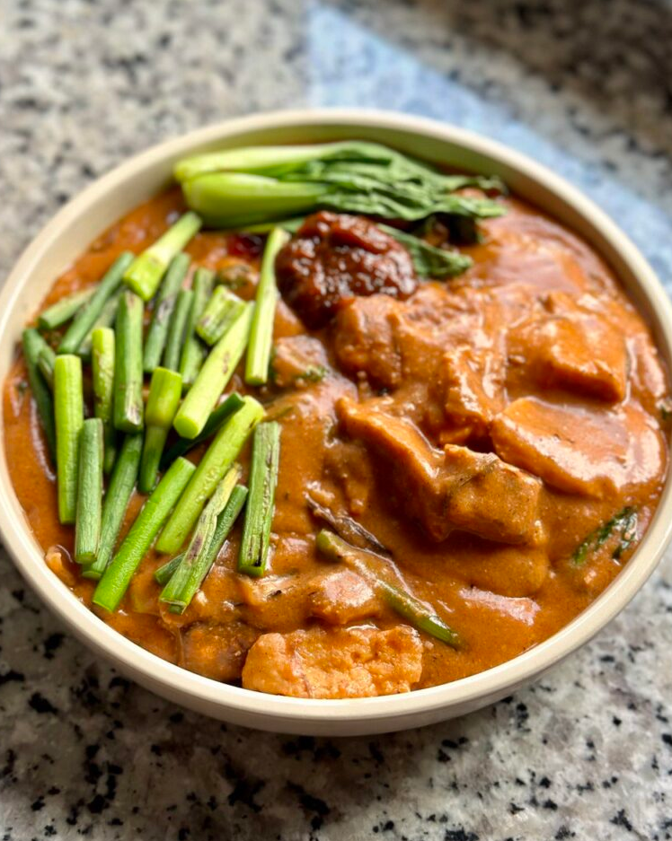

Filipino Peanut Stew (Kare Kare)

Kare Kare
is a traditional Filipino thick savoury peanut stew, accompanied by a vegan shrimp paste to bring it to the next level.Kare Kare is a traditional Filipino stew, commonly using different types of meats like oxtails and pork parts.
Main Ingredients
- Banana Blossom you can also get fresh banana hearts which is what I used in this recipe. They also sell canned banana blossom, which would be more convenient.
- Eggplants a versatile vegetable used in Kare Kare
- Garlic Sprouts we're using this in place of long string beans for more flavour but you can still use long spring beans!
- Bok Choy you can use any other chinese greens if you are unable to find bok choy
- Protein I used extra firm tofu and tempeh
- Rice Flour I used rice flour from a pack for convenience but traditionally toasted rice flour is used
- Annatto Powder to give the stew a brighter colour
- Ground Peanuts + Unsweetened Peanut Butter form the signature flavours of this dish
- Vegan Fish Sauce
- Beef Boullion Cube or vegetable stock cube
- Vegan Shrimp Paste
How to make it
- Chop your shallots and garlic finely. Slice eggplants and garlic sprouts in a 3-inch length, shred your banana blossoms and keep aside. Reserve some bok choy and garlic sprouts for serving later.
- Roast 3/4 cup peanuts and ground them into a fine powder.
- Fry your tofu and tempeh in some oil and keep them aside.
- Add some oil to a wok. Add shallots and fry until lightly brown. Then add minced garlic and saute until fragrant.
- Add eggplants and saute for 5-8 minutes until they are cooked. Halfway through, add banana blossoms.
- Once that's done, add garlic sprouts and saute for about 2 minutes. Remove the ingredients and keep them aside.
- To the same wok, add water, annatto powder and mix well. Add ground peanuts and peanut butter and combine well.
- Add vegan fish sauce, beef boullion cube and mix until combined. Mix rice flour in some water to create slurry and pour that in.
- Bring the mixture to boil as you keep stirring. It should become thicker.
- Add in your protein and vegetables back in. Lastly, add in your bok choy and mix until they become cooked (should take 1 minute).
- Mix in 2 tbsp vegan shrimp paste. Mix well and serve with blanched bok choy, stir fried garlic sprouts and a heaping spoon of vegan shrimp paste. Enjoy!
Home